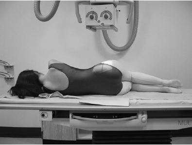
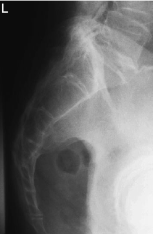

Sacrum(Lateral)
Centering point:Direct the central ray at right-angles to the long axis of the
sacrum and towards a point in the midline of the table at a
level midway between the posterior superior iliac spines and
the sacro-coccygeal junction.

Cassette Size:35cm x 43cm (17 x 10 ins)
Potrait
Exposure Factors:65kVp on 32MaS
FFD:100cm
Bucky/Grid:Moving or Stationary Grid
Filter:No
Collimation:collimate to include area of interest
Pathologies:Back pain
Position of patient and cassette
- The patient lies on either side on the Bucky table, with the
arms raised and the hands resting on the pillow. The knees
and hips are flexed slightly for stability.
- The dorsal aspect of the trunk should be at right-angles to the
cassette. This can be assessed by palpating the iliac crests or
the posterior superior iliac spines.
- The coronal plane running through the centre of the spine
should coincide with, and be perpendicular to, the midline of
the Bucky.
- The cassette is displaced cranially so that its centre coincides
with the central ray.
- Non-opaque pads may be placed under the waist and knees,
as necessary, to bring the vertebral column parallel to the
cassette.
Radiograph
